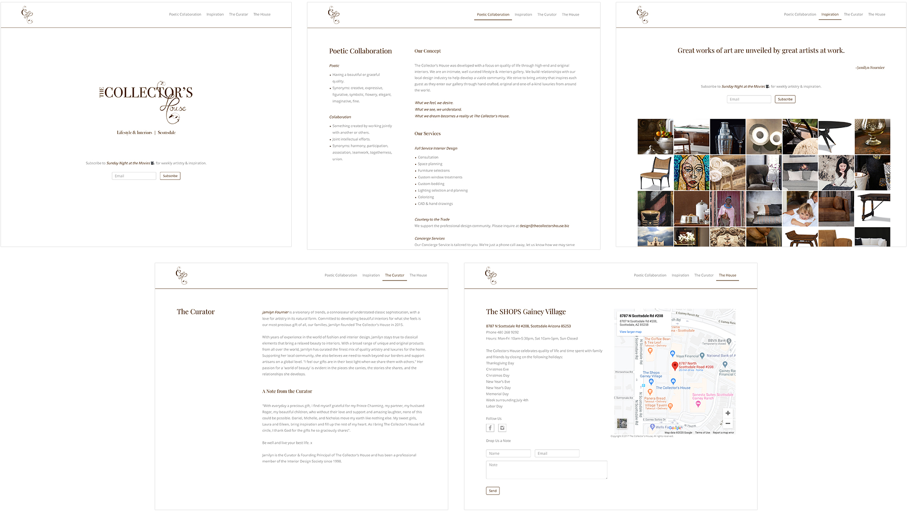

Role
I was hired by The Collector's House, a new luxury and interior design studio in Scottsdale, to design and build their website and craft branding and marketing materials.
Challenge
The luxury home market in Scottsdale was extremely competitive and The Collector's House needed a niche, specific focus in order to grow and succeed. Nestled in a plaza surrounded by other furniture stores and decor boutiques, I had to dive deep into local user research and refine a brand/web presence that had to differentiate.
Process
I worked closely with the business owners to gain discovery and insight into their vision for the brand. I then conducted user research, drew inspiration from ideas and feedback, designed, developed, tested, and launched a website and brand. I then revisited the project to improve discoverability and usage.
Goals
User: Design and build a website and brand that is engaging, unique, elegant, and simple so that customers can immediately relate to the company's vision.
Business: Grow web traffic and increase referrals and store visits.
| KPI's | 2016 | 2019 |
|---|---|---|
| Site visits per year | 6,607 | 12,410 |
| Site searches per quarter | 823 | 5,130 |
| Store calls per quarter | 7.1 | 38.9 |
Timeline
October 2015 - Present
"Very high loving and spirited. By far one of the most unique stores in the valley and a beautiful website. The designers have an amazing eye for exclusive design. 10/10 will continue to come for more pieces!"
Customer review
{kind=link}
Discovery
Vision and Themes
My client had a very particular vision for the website. Growing up in the interior design industry, they were accustomed to traditional means of brand outreach and communication while stressing analog practices. Some ideas and themes began to emerge:
- Magazine or flipbook look and feel
- "Pencil-on-paper", elegant writing
- White space and open
- Celebrate the artist and their craft
- Showcase deliberate and beautiful photography
Goals
User: Design and build a website and brand that is engaging, unique, elegant, and simple so that customers can immediately relate to the company's vision.
Business: Grow web traffic and increase referrals and store visits.
KPI's
I then recommended some indicators to track progress and growth:
- Site visits per year
- Site searches per quarter
- Store calls per quarter
Form Hypothesis
I believe growing brand recognition and customer engagement will be achieved by designing a clean, simple, and revealing brand and web presence.
Understand Customers and Their Needs
Persona
I needed a better understanding of the customers. Information from my client, customers, and gathering research and census data of the Scottsdale area helped me iron out a persona:
Demographic
- Majority are older (54+ years old)
- Scottsdale resident or seasonal
- High income
Needs
- Interior design consultation
- Rare or one-off home furniture and decor
Behaviors
- High spenders
- Local and community influenced
- Collects art and/or enthusiasts
- Seek small, luxury-focused plazas
{kind=link}
{kind=link}
Come Up with Solutions
Direction
I spent time noting aspects of the site that would cater to our customer base. Things like clear access to store location and contact information, emphasizing photography, and presenting easy-to-scan blocks of information guided me.
Visual Design
I revisited the initial ideas and themes and we started focusing on the "magazine/flipbook" direction for the website. The concept was to mimic the experience of flipping through a luxury magazine or art gallery flipbook.
Ideas
- Have pages animate on select; avoid static loading
- Draw visitor's attention through the center of the page
- Photography up front, supporting text backgrounded
- Decorative titles coupled with a clean, universal sans-serif
- Multiple columns vs. singular
Early wireframes of site layout and interaction sets.
Develop the Site
Approach
I used framework Bootstrap 3 as a boilerplate to start developing the site. Some key areas I wanted to focus on:
- Always exposed and accessible navigation
- Show animation on each page transition
- Keep each page simple and avoid excessive scrolling
Build Elements
I then broke views down into clusters of elements:
- Navigation bar
- Text blocks
- Image blocks
- Google Map embed and location API
- Form fields and buttons
- Lightbox modal
Coming to Life
I approached each page as groups of elements, making everything visually consistent and easy to understand from a coding standpoint. Once each page was where we wanted it, I hooked up the animation through Javascript and the site came to life
{kind=link}

Version 1 of the site.
{kind=link}
Launch, Feedback, and Iterate
Launch
After much testing and tweaking with my client and their customers, we launched the initial version of the site in December, 2015. It slowly saw an increase in visitors and clicks thanks to my local advertising efforts, high season for the industry, and web searching.
Gather Feedback
The site was monitored and lightly iterated on for two years before my client reached out about a needed update. Feedback accumulated from customers and staff after using the site:
- The page animation is slow and breaks occasionally
- Some customers found it cumbersome to navigate on mobile
- Bounce rates occured from the "Contact us" form taking too long to submit
- Hours of operation and holidays were difficult to locate
Iteration
This feedback fueled my desire to greatly improve the site's UX and functionality. I boiled it down to these key aspects needed for success:
- Depart from the page animations and stick with conventional page loading and navigation patterns
- Use simpler, more direct naming conventions for page names and CTA's
- Since most of these customers are visiting from a mobile device, focus on enhancing their experience as much as possible
The Outcome
Within the first 6 months of relaunching the site in September, 2019, the site received a huge boost in traffic, store visits increased, and interest in the brand grew.
| KPI's | 2016 | 2019 |
|---|---|---|
| Site visits per year | 6,607 | 12,410 |
| Site searches per quarter | 823 | 5,130 |
| Store calls per quarter | 7.1 | 38.9 |
{kind=link}
Inspiration
Initial Direction
My client had a strong vision for their brand from the get-go: strive for "natural", "classic" and authentic/one-of-a-kind, much like the pieces they sell.
Examples and Insight
We went through many local design magazines and took in surrounding areas. Publications like Phoenix Home & Garden, Luxe Magazine, and Modern Luxury gave us great insight as to how other luxury brands promoted their vision and supply through advertising. Walking around various stores, exploring tradeshows, vendors, and warehouses and seeing the type of work being sold and created also helped us greatly.
Define Design Language
Theme
From what we took in, I started piecing together the brand's theme, used to convey its meaning, feeling, and purpose:
- Natural, hand-crafted, and raw
- Light, air-y, and clean
- Organized, tidy, and purposeful
Building Blocks
Using themes to drive design language decisions, I broke it down into building blocks:
- Color palette: Chocolate, wicker, and white
- Shapes: Square and hard edges
- Typography: Traditional serif for titles, simple sans-serif for body
- Metaphors: Natural, organized, and refined
{kind=link}
{kind=link}
Define Logo and Mark
Ideas
With general branding direction established, we started on the logo and mark. My client wanted "The Collector's House" type in serif with some of the "natural" metaphors. Ideas began to emerge:
- Tie the identity with artist's works; hand-made, rough, and wooden
- Duality of rigid, structure met with natural, soft
- "Classically modern"
Sketches
I started drawing elements and objects that represented these ideas. My client and I closely collaborated in this phase and came up with some solid options revolving around the "CH", duality and natural ideas.
Digitize and Refine
With a couple of strong candidates defined on paper and I translated them into Adobe Illustrator for refinement. After a few iterations of using different typefaces and elements, I designed the final logo and mark variations.
Final logo and mark variations.
The Outcome
We then brought all the inspiration, themes, and design language elements to life through print design. From outdoor signage to full page ads, we let the brand grow and shape into something unique and special for my client's audience.